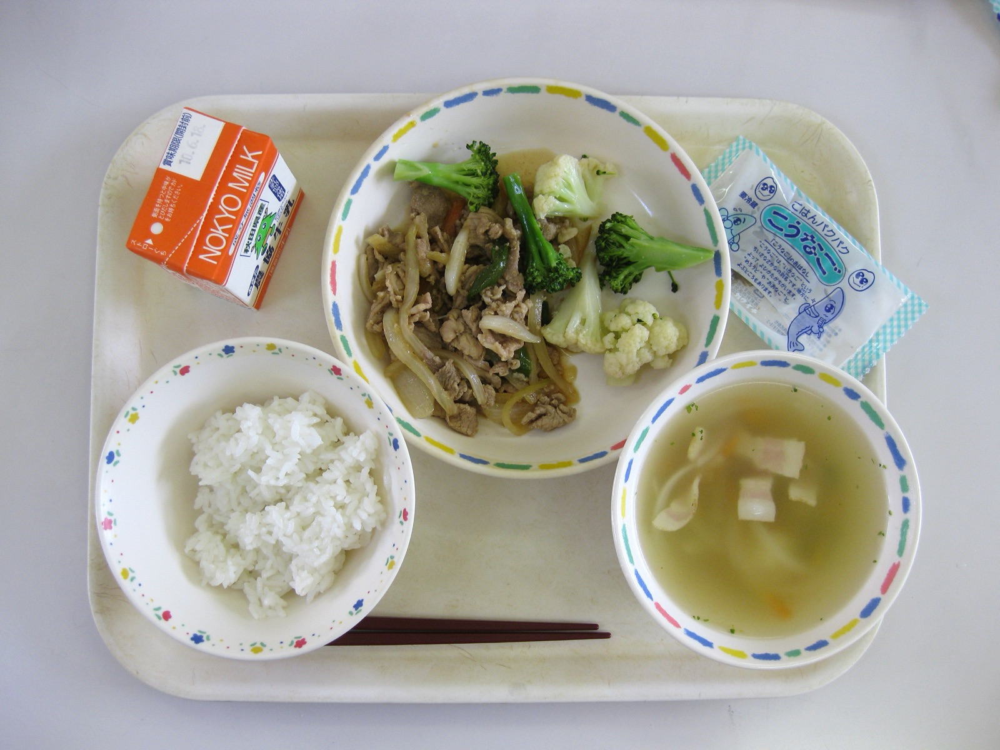
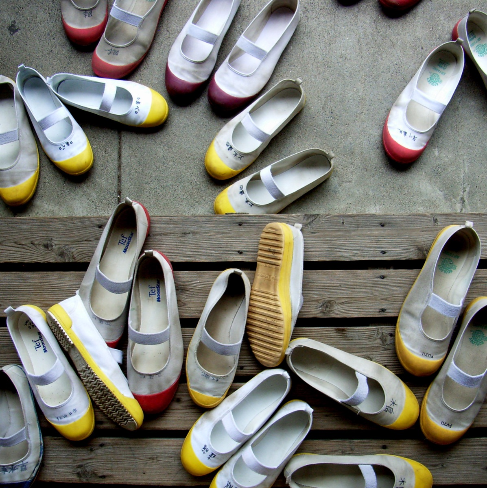
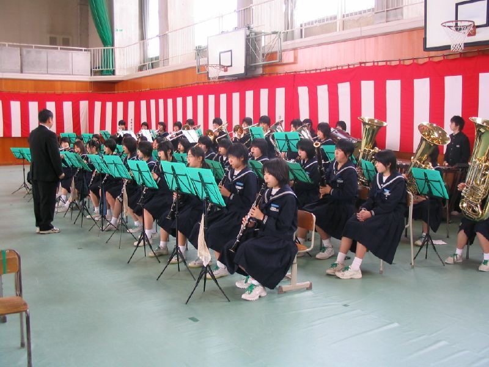

Picture the end of a lesson in a Japanese school. The bell rings, but a cleaning crew does not arrive. Desks move. Students pick up brooms and cloths. Later, another group may put on white coats and carry lunch to classmates. At the entrance, rows of outdoor shoes wait in cubbies.
These scenes are real, but the popular internet version often turns them into a claim that every school in Japan works identically—or that a single custom explains Japanese society. It does not. Public and private schools, municipalities, age groups and individual campuses differ. The more useful question is why so many ordinary tasks are treated as education.
Students clean their own classrooms
In many elementary and junior high schools, a scheduled sōji or seisō period sends groups to classrooms, corridors, stairs and sometimes school grounds. MEXT’s guide for families arriving from abroad states plainly that students share responsibility for cleaning. A 2025 Government of Japan feature describes pupils taking the lead in both private classroom space and common areas.
The point is not that Japanese schools employ no adults. Tasks requiring specialist equipment, repairs, sanitation expertise or work beyond children’s safe capacity still need adult staff. Practices also vary. Student cleaning is better understood as a recurring group responsibility: divide a space, complete an unglamorous job and leave a shared place ready for the next person.
Students serve school lunch

At schools with kyūshoku, students commonly rotate through lunch duty. The day’s team may wear white coats and caps, collect containers, portion food, serve classmates and return equipment. MEXT describes setting and clearing the table as a normal part of lunch; JapanGov presents the meal as both nutrition and shokuiku—food education.
The surprise is not merely children holding ladles. Lunch joins nutrition, logistics and care for classmates in one daily lesson. Students see that a shared meal has work behind it. Teachers and nutrition professionals remain responsible for instruction and safe systems, and allergy or religious needs require direct consultation with the school.
Again, there is no single national scene. Some junior high students bring lunch from home; provision and serving arrangements differ by area and school. “Japanese students serve lunch” describes a widespread pattern, not a promise about every cafeteria.
Students change their shoes at school

At the genkan or school entrance, many students place outdoor footwear in a getabako—a bank of shoe cubbies—and change into uwabaki, indoor shoes. MEXT’s English introduction to elementary school shows the sequence explicitly and lists indoor shoes among the supplies a family may need.
This is not a magical cleanliness barrier: indoor shoes still touch floors, and schools must still clean. It is a visible boundary between outside and inside. The habit also makes wet, muddy outdoor footwear easier to contain and turns entering school into a small transition ritual.
Want to remember the Japanese rather than only read it once? Japanese Training Lab offers free web practice with no signup required.
Many children go to school without their parents
MEXT’s elementary-school orientation says children may walk to school on their own; in some areas, nearby children meet and walk in a designated group. That can surprise visitors accustomed to a parent driving each child to the gate.
Independence does not mean absence of a safety system. Routes, crossing points, school zones, neighborhood volunteers, guardians, older pupils and group schedules can all be part of the background. Urban students may use public transport; local rules and distance matter. A child appearing “alone” is often moving through an environment organized by many adults.
Nor should the image be romanticized. Traffic risk, heat, severe weather, bullying and regional depopulation are real concerns, and families’ arrangements vary. The significant lesson is calibrated independence: children learn a repeated public route, while a community tries to make that route manageable.
School clubs can become a second timetable

For many junior and senior high students, bukatsudō means more than a casual weekly club. Sports, brass band, art, science and other groups can organize identity, friendships and the rhythm after class. Practice, performances and matches may reach weekends, depending on the school and activity.
Clubs can build skill, responsibility and solidarity; the Japan Sports Agency describes those as educational benefits. But intensity has a cost. Long hours can strain students and teacher-advisers, and shrinking enrollment can leave a school unable to sustain every team. That is why club activity is now a reform issue, with national guidance moving toward sustainable school and community-based options from fiscal 2026.
What the five routines really teach
Cleaning says the room belongs partly to you. Lunch duty says a meal arrives through someone’s work. Changing shoes marks a shared interior. Commuting teaches a route through public space. Clubs ask students to sustain a group over time. None guarantees cooperation, safety or equality. Each is simply a structure in which those qualities can be practiced—and sometimes contested.
This is why copying only the visible ritual can miss the lesson. A broom, white coat or shoe cubby is not the educational philosophy by itself. The core is agency with boundaries: children take real responsibility, adults design conditions, and the group reflects on how school life can improve.
For travelers, ordinary schools are not attractions: do not enter grounds or photograph children without permission. To see everyday Japan respectfully, walk public streets with Yuji on TikTok LIVE. To learn words such as sōji, kyūshoku and uwabaki through play, try DraMap on iPhone.
Reporting sources
- MEXT: Guidebook for Starting School (English) — lunch, cleaning and club activities.
- MEXT: Tell Me About Japanese Elementary School (English) — walking, group commuting, shoe changing, lunch and cleaning.
- Government of Japan: Fostering “Competencies for Living” — student-led lunch and cleaning.
- Government of Japan: Social Skills Through Autonomy and Collaboration — tokkatsu and shared duties.
- JapanGov: School Lunches, Health and Prosperity — food education and student servers.
- Japan Sports Agency: School Sports Club Activities — educational aims.
- Japan Sports Agency: 2025 comprehensive club-reform guidelines — fiscal 2026 reform period.
Sources and changing policy details were checked November 1, 2026. School practice varies by municipality, school type, age and campus. The selection and interpretation are Japan Unfolded’s editorial judgment.
Watch the everyday systems around Japan.
Yuji edits Japan Unfolded and created DraMap. Walk real streets on TikTok LIVE, then learn Japanese while playing on iPhone.
Japan Unfolded is independently edited by Yuji Shimizu, creator of DraMap. The app link is publisher promotion; editorial claims are sourced above.